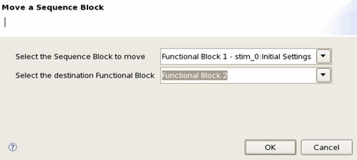
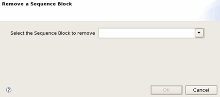

Working with Sequence Block
You can move or remove a sequence block.
The following pictures illustrate some operations related to sequence block.


Functional changes
- Introduced in SmarTest 7.0.3
You can move or remove a sequence block.
The following pictures illustrate some operations related to sequence block.

